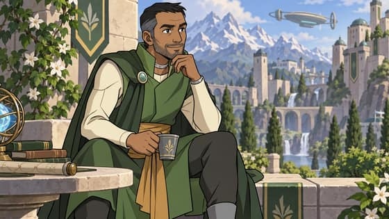
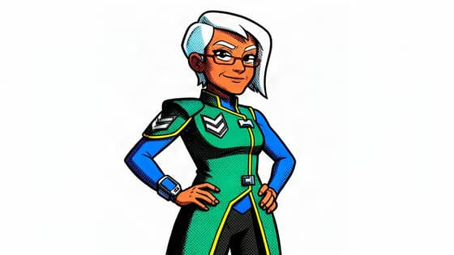
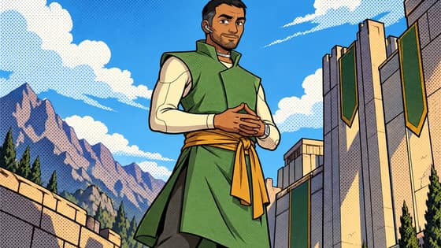
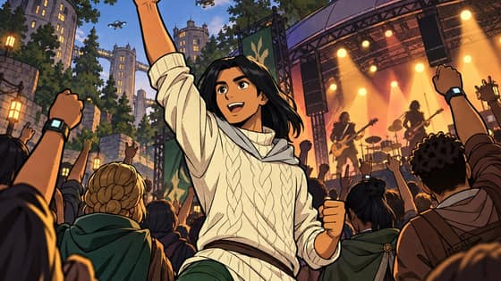
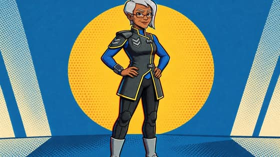

Style SamplesDRAFT
Candidate sample pictures for the three styles published without samples: Animated series, Comic book and Comic 3D mix. All are pictures that already exist, each with its full recipe in the ledger named under it; nothing new was made for this page. The owner picks two per style.
“Strong sample” is the coding agent’s reading: clearly that look, the character recognisable, one figure. The style test’s pictures (8 Nov) were made with that test’s prompt (“Style: …” and the earlier closing line) and an empty change box; the others with the challenge’s prompt.
AI-generated test pictures, not published. Drafted by the coding agent (Claude, a closed model by Anthropic). DRAFT until the owner approves it.
Animated series
![Animated series 1: Zei, by FLUX.2 [klein] 4B. AI-generated.](img/animated-series-1-rp-02-zei-flux.jpg)
docs/starting-sheet-drafts/real-prompts-2026-11-09/ledger.json, row 13sha256 2160458e811aeaf797c54dbb53760d86dfe1388291fd3c177af9c8728696b3d1Strong sample of the style: yes — clean outlines, flat colour, lively face; one figure
docs/starting-sheet-drafts/real-prompts-2026-11-09/ledger.json, row 32sha256 67119d6da9b0c8ff7c557352c317c01961b0fe857748bf905c075aad46b76f37Strong sample of the style: yes — crisp cel look, Seila clear in a spacesuit; one figure
docs/starting-sheet-drafts/real-prompts-2026-11-09/ledger.json, row 48sha256 f09727429c0a1ca89598e10bf74250417dcb6c0cd9ad695327274e7141f31c67Strong sample of the style: yes — bold outlines, flat night colours; Mu clear; one figure
docs/starting-sheet-drafts/real-prompts-2026-11-09/ledger.json, row 30sha256 7793a76b7e5f0d1e588cc2ef5b6d5a8b21018874f2c9e97226562c862f22c5e9Strong sample of the style: yes — flat cel colour, expressive face, a dragon; one figure
docs/starting-sheet-drafts/world-line-2026-11-09/ledger.json, row 54sha256 70a065de5fb4c42d69ce2c3a5ee4d75c468ad96990d1711d0b720aa0ef197f18Strong sample of the style: partly — the look holds but the detailed city background is busier than the style asks
docs/starting-sheet-drafts/world-line-2026-11-09/ledger.json, row 66sha256 0a0a9c576573e1f8c54e8f1768b625a1e69b5ff5d0fafd7bfc789012afa647aeStrong sample of the style: partly — clean figure; a detailed painted backgroundComic book

docs/starting-sheet-drafts/book-world-2026-11-09/ledger.json, row 7sha256 0e500ede7ff6ddddf1fb7cb52645bf25e7b8ce398600a087d388f3ef0665d6f7Strong sample of the style: yes — dramatic angle, bold ink, bright flat colour; Zei clear
docs/starting-sheet-drafts/style-test-2026-11-08/ledger.json, row 294sha256 18482470092406477f975b899e20fe7e24df68eafebca56abf7a0093d1e8adabStrong sample of the style: yes — heavy black outlines, flat bright colour, dot shading; plain white ground
docs/starting-sheet-drafts/style-test-2026-11-08/ledger.json, row 413sha256 d9a1b6a92ae9cb6e025e631885bee530da7b63cfcff5dff8ee9fd7ec2195a142Strong sample of the style: yes — low dramatic angle, dot-pattern sky, bold outlines
docs/starting-sheet-drafts/style-test-2026-11-08/ledger.json, row 534sha256 f7141f1673082a5c19bcec4021c4b1b5407afcd95f23acbfaadfcc5f7ca599ecStrong sample of the style: yes — extreme low angle, inked lines, flat colour
docs/starting-sheet-drafts/book-world-2026-11-09/ledger.json, row 9sha256 d16ca05b26c210b50bc34ae3f16268cbe265732194828e833dceedf85a3387bdStrong sample of the style: partly — dramatic angle and inks; the dot shading is faint
docs/starting-sheet-drafts/book-world-2026-11-09/ledger.json, row 11sha256 44c50aae5b7883c3ee36c61b9dd9e8ed46b7a2a569a3865468c4aae05cf1a14bStrong sample of the style: partly — bold inks and colour; reads more cel than printed comicComic 3D mix

docs/starting-sheet-drafts/style-test-2026-11-08/ledger.json, row 474sha256 342f79a15be79ce3a86d87fba003111e9468a0b1bbee59fbf0319f222c8fba45Strong sample of the style: yes — 3D-shaded figure with inked lines, halftone sunburst, offset colour
docs/starting-sheet-drafts/style-test-2026-11-08/ledger.json, row 428sha256 055e382b36e531f7327b869f1dc169e3d1e43f87fa82a2d9e542f464cb21e504Strong sample of the style: yes — rounded shading with ink lines, graphic colour, halftone sky![Comic 3D mix 3: Zei, by FLUX.2 [klein] 4B. AI-generated.](img/comic-3d-mix-3-comic-3d-mix-zei-flux.jpg)
docs/starting-sheet-drafts/style-test-2026-11-08/ledger.json, row 6sha256 aab56b0a836368590bd149843120b740ed090a2cc1e794f3b838625e7bd8f75bStrong sample of the style: partly — hatching and offset colour on a plain ground; little 3D form
docs/starting-sheet-drafts/book-world-2026-11-09/ledger.json, row 10sha256 d4b0e32675c4467845d436f5ab3c275f9826b53563d0b2863aaecb008c439a35Strong sample of the style: partly — a strong picture; the 3D-and-halftone look is light
docs/starting-sheet-drafts/book-world-2026-11-09/ledger.json, row 12sha256 f4f27a2874eced1731f4f98dbb07b10ef9efa37f2365397ec9e122f2026bcbdfStrong sample of the style: partly — a strong picture; mostly cel, light hatching
docs/starting-sheet-drafts/book-world-2026-11-09/ledger.json, row 8sha256 d590572037233ad8a48e7c190c58f575919d3bb09cb9774c7d3889c09fc740d4Strong sample of the style: partly — a strong picture; mostly cel, light hatching